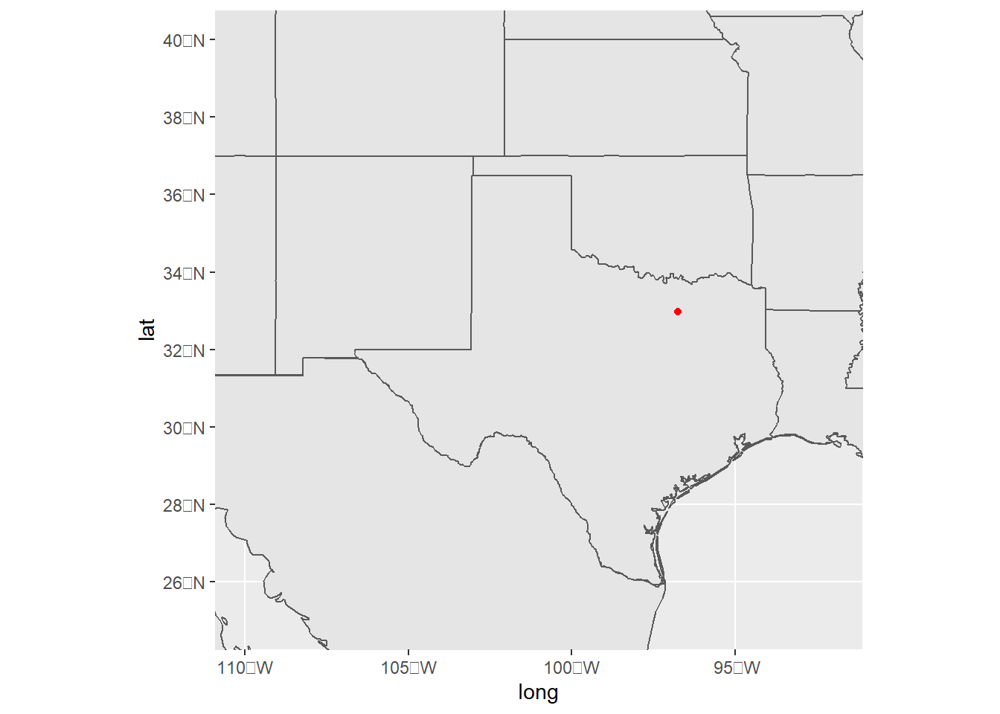

library(tidyverse)── Attaching packages ─────────────────────────────────────── tidyverse 1.3.1 ──✔ ggplot2 3.3.6 ✔ purrr 0.3.4
✔ tibble 3.1.7 ✔ dplyr 1.0.9
✔ tidyr 1.2.0 ✔ stringr 1.4.0
✔ readr 2.1.2 ✔ forcats 0.5.1── Conflicts ────────────────────────────────────────── tidyverse_conflicts() ──
✖ dplyr::filter() masks stats::filter()
✖ dplyr::lag() masks stats::lag()library(sf)Linking to GEOS 3.9.1, GDAL 3.3.2, PROJ 7.2.1; sf_use_s2() is TRUElibrary(ggspatial)Warning: package 'ggspatial' was built under R version 4.2.3library(rnaturalearth)
library(tidygeocoder)Warning: package 'tidygeocoder' was built under R version 4.2.3library(maps)
Attaching package: 'maps'The following object is masked from 'package:purrr':
mapworld_map_data <- ne_countries(scale = "medium", returnclass = "sf")
state_map_data <- map('state', fill = TRUE, plot = FALSE) %>% st_as_sf()
portlist = c("the University of Texas at Dallas")
port_data = tibble(location = portlist)
port_data %>%
mutate(lat = NA
,long = NA
) ->
port_data
for(i in 1:nrow(port_data)){
coordinates = geo_osm(port_data$location[i])
port_data$long[i] = coordinates$long
port_data$lat[i] = coordinates$lat
}Warning: `geo_osm()` was deprecated in tidygeocoder 1.0.3.
Please use `geo()` instead.
This warning is displayed once every 8 hours.
Call `lifecycle::last_lifecycle_warnings()` to see where this warning was generated.Passing 1 address to the Nominatim single address geocoderQuery completed in: 1 secondsggplot() +
geom_sf(data = world_map_data) +
geom_sf(data = state_map_data) +
geom_point(data = port_data, aes(x = long, y = lat), color = 'red') +
coord_sf(xlim = c(-110, -92), ylim = c(25,40))